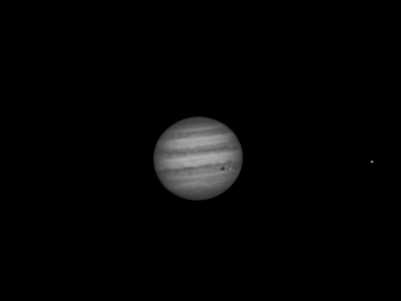

Blog
Small tidbits about my latest research projects
Holy Jiggling Jupiter Batman!
27th May 2017
This picture may look a little bit rubbish, but I think it's really, really neat. The black spot on Jupiter is the shadow from one of Jupiter's moons, Io (which is the white dot to the left of it), and the white circle out to the right is another moon, Europa. I had no idea at the time I captured the video that two of Jupiter's moon were visible. The gif below shows the raw footage, which is very similar to what you see through a telescope. The image is rippling because the light gets distorted as it travels down through the atmosphere (which is known as astronomical seeing, also known as my dissertation topic), much like a mirage on a hot day. The best way to do any planetary imaging is by using a technique called Lucky Imaging. This means you take a lot of photos (or a video like I did) and then you sort through for the best frames. These happen when you get a break in the ripples and the image looks nice and clear. The best frames are then processed and stacked resulting in a clear picture!
I actually took this video with a cheap webcam that I pulled the lens off and attached to the telescope, so the telescope was effectively the lens of the camera. I am still learning and playing around with my set up (in between trying to finish my dissertation and the continuous stream of assignments), but hopefully I can post something better in the not too distant future.

What is it you want Mary? You want the moon?
20th September 2016

I finally had the opportunity to take out the telescope that I will be using for my honours project and try to take a few snaps. Because the moon was so bright, it was difficult to see anything other than Mars and Saturn, but the moon sure was a winner itself. This photo is made out of 6 separate images that I took using a lucky image technique (taking several images of the same area of the moon and sorting through to find the image least affected by the atmosphere).
I spy with a very heavy telescope
7th May 2016

Finally I was home for a weekend where the skies looked promising. All week it was forecasted to be overcast and possibly even showers so when at lunch time the skies looked clear I thought I would take the chance and pick the telescope up from university. Luckily I had my husband to help share the heavy lifting (after which I was ready for a nap) and we soon had the telescope and tripod loaded up and headed back to my house.
We set up the telescope up a small hill from my flat (ready for nap number two by this stage). (Seriously, that telescope is heavy.) The cloud came and went and by the time the sun disappeared, it looked to be pretty near perfect. I spent a very long amount of time trying to get the telescope aligned correctly but when it was convinced that all three planets that I had planned on viewing were actually below the horizon (very, very wrong) I gave up and opted for the less painful option of manually slewing the telescope.
The first and easiest target was Jupiter. I managed to get a rather clear image of Jupiter and 3 moons, I was even able to make out two large stripes on the planet. Very exciting. I wasn't sure how well I would see planets on the telescope I am going to be using for my honours project but I was very pleased with what I saw.
All the mucking around with the alignment meant that well over an hour had passed and Mars and Saturn had moved out from behind a tree in my backyard. Mars was visible with a small amount of detail and reasonably...I don't want to say boring because it's still another planet...but yeah, unexciting. Saturn, on the other hand, was one of the most exciting things I have ever seen. I have been waiting a very long time to see the ringed planet and it did not disappoint (all 10 seconds I got to look at it before dew moved in and made it far too blurry). Making a dew shield and possibly dew heater are definitely on the to-do list.
The main reason I took the telescope out tonight was to check the collimation of the telescope and make sure the mirrors are aligned correctly. Luckily, this only needed minor tweaking because the telescope was set up on a hill and trying to stand on your tippy toes while downhill to reach a lens that is pointed high into the sky gets old very fast.
Hopefully by the time I get around to the next update I will have modified a webcam for imaging with the telescope and I will try to add a few pictures to the blog. Plus, I am looking forward to using a soldering iron again.
Love at first sight
5th May 2016
I just really enjoyed this picture and I am not going to lie, my main motivation for leaving this here is so that I get to rediscover it again. You can click on the picture to get a larger image. I love finding those pictures that perfectly mix design and information.
The top half shows where the general path of every probe out there, with each line numbered. The bottom half shows what each probe looks like, and is sorted by whatever planet it was assigned to explore. Source: Gizmodo
And so it begins...
5th March 2016

Technically I don't start my honours until July as I am still completing my BSc, but as I have a lighter paper load this semester I wanted to get started as soon as I could. The more we add to the list of "Things to Check Still Work", the more I am glad I started early. The telescope I will be using has been sitting unused in a corner for the last few years. Best case scenario is that everything works fine and just needs a bit of a clean and the electrical equipment just needs to be checked over for new warrants. Worst case scenario is things are broken or missing - BUT at least finding that out now means we have time to replace the items.
Another key element of my project involves adapting or creating a DIMM mask for the telescope. My supervisor has been gifted one for a Meade telescope but it is for a smaller model than the one I will be using. To do this I will most likely be in contact with someone from the engineering workshop to help out so even if it is an easy task, the job may be sitting on a long wait list. I also need to research, design and make a suitable transport case for the telescope and tripod.
I started researching astronomical seeing and past papers about using a DIMM mask but so far I haven't had much luck in finding anything too helpful. I had been hoping to find something along the lines of an amateur astronomer taking measurements of their own near places they enjoy using their telescope but perhaps that would have been far too easy for me.
My honours project
I am completing my Honours at the University of Auckland with Dr Nicholas Rattenbury as my supervisor. I am working on creating a Differential Image Motion Monitor to measure atmospheric turbulence. I will be using a Meade LX200GPS telescope in various spots around the Auckland region.